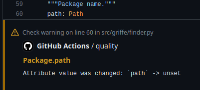
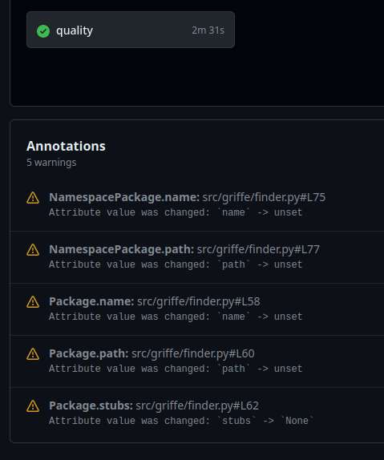

Checking APIs¤
Griffe is able to compare two snapshots of your project to detect API breakages between the old and the new snapshot. By snapshot we mean a specific point in your Git history. For example, you can ask Griffe to compare your current code against a specific tag.
Command-line¤
Using Git¤
By default, Griffe will compare the current code to the latest tag:
$ griffe check mypackage
To specify another Git reference to check against, use the --against or -a option:
$ griffe check mypackage -a 0.2.0
You can specify a Git tag, commit (hash), or even a branch: Griffe will create a worktree at this reference in a temporary directory, and clean it up after finishing.
If you want to also specify the base reference to use (instead of the current code), use the --base or -b option. Some examples:
$ griffe check mypackage -b HEAD -a 2.0.0
$ griffe check mypackage -b 2.0.0 -a 1.0.0
$ griffe check mypackage -b fix-issue-90 -a 1.2.3
$ griffe check mypackage -b 8afcfd6e
Important:
Remember that the base is the most recent reference, and the one we compare it against is the oldest one.
The package name you pass to griffe check must be found relative to the repository root. For Griffe to find packages in subfolders, pass the parent subfolder to the --search or -s option. Example for src-layouts:
$ griffe check -s src griffe
Example in a monorepo, within a deeper file tree:
$ griffe check -s back/services/identity-provider/src identity_provider
Using PyPI¤
It's also possible to directly check packages from PyPI.org (or other indexes configured through PIP_INDEX_URL). This feature requires that you install Griffe with the pypi extra:
$ pip install griffe[pypi]
The command syntax is:
$ griffe check package_name -b project-name==2.0 -a project-name==1.0
You can let Griffe guess the package name by passing an empty string:
$ griffe check "" -b project-name==2.0 -a project-name==1.0
PEP 508 version specifiers are supported (<, <=, !=, ==, >=, >, ~=). For example, to compare v2 against the version just before it:
$ griffe check "" -b project-name==2.0 -a project-name<2.0
Without a version specifier on the base reference, or without a base reference at all, Griffe will use the latest available version. The two following commands compare the latest version against v1:
$ griffe check "" -b project-name -a project-name==1.0
$ griffe check "" -a project-name==1.0
Griffe will actually install packages in a cache directory. It means a few things: source distributions are supported, and only packages that are compatible with your current environment can be checked.
Python API¤
To programmatically check for API breaking changes, you have to load two snapshots of your code base, for example using our load_git() utility, and then passing them both to the find_breaking_changes() function. This function will yield instances of Breakage. It's up to you how you want to use these breakage instances.
import griffe
my_pkg_v1 = griffe.load_git("my_pkg", ref="v1")
my_pkg_v2 = griffe.load_git("my_pkg", ref="v2")
for breaking_change in find_breaking_changes(my_pkg_v1, my_pkg_v2):
print(breaking_change.explain())
In CI¤
It is of course possible to Griffe in CI (Continuous Integration) to make sure no breaking changes are introduced in pull/merge requests.
GitHub¤
Here is a quick example on how to use Griffe in a GitHub workflow:
jobs:
check-api:
runs-on: ubuntu-latest
steps:
- uses: actions/checkout@v5
with:
fetch-depth: 0 # We the need the full Git history.
- uses: astral-sh/setup-uv@v6
# The following command will compare current changes to latest tag.
- run: uvx griffe check --search src --format github your_package_name
The last step will fail the workflow if any breaking change is found.
Azure Pipelines¤
Here is a quick example on how to use Griffe in an Azure Pipeline. Griffe can format its output using Azure DevOps task logging commands, similar to GitHub Actions messages:
jobs:
- name: check-api
pool:
vmImage: 'ubuntu-latest'
steps:
- checkout: self
fetchDepth: 0 # We the need the full Git history.
- task: CmdLine@2
inputs:
script: pip install --user griffe
- task: CmdLine@2
inputs:
# The following command will compare current changes to latest tag.
script: |
griffe check --search src --format azdo your_package_name
The last step will fail the workflow if any breaking change is found.
Detected breakages¤
In this section, we will describe the breakages that Griffe detects, giving some code examples and hints on how to properly communicate breakages with deprecation messages before actually releasing them.
Obviously, these explanations and the value of the hints we provide depend on your definition of what is a public Python API. There is no clear and generally agreed upon definition of "public Python API". A public Python API might vary from one project to another. In essence, your public API is what you say it is.
However, we do have conventions like prefixing objects with an underscore to tell users these objects are part of the private API, or internals, and therefore should not be used. For the rest, Griffe can detect changes that will trigger immediate errors in your users code', and changes that might cause issues in your users' code. Although the latter sound less impactful, they do have a serious impact, because they can silently change the behavior of your users' code, leading to issues that are hard to detect, understand and fix.
Knowing that every change is a breaking change, the more we detect and document (potentially) breaking changes in our changelogs, the better.
Parameter moved¤
Positional parameter was moved.
Moving the order of positional parameters can silently break your users' code.
# your code
def greet(prefix, name):
print(prefix + " " + name)
# user's code
greet("hello", "world")
# your code
def greet(name, prefix):
print(prefix + " " + name)
# user's code: no immediate error, broken behavior
greet("hello", "world")
Note
Moving required parameters around is not really an API breakage, depending on our definition of API, since this won't raise immediate errors like TypeError. The function expects a number of arguments, and the developer passes it this same number of arguments: the contract is fulfilled. But parameters very often have specific meaning, and changing their order will silently lead (no immediate error) to incorrect behavior, potentially making it difficult to detect, understand and fix the issue. That is why it is important to warn developers about such changes.
Hint
If you often add, move or remove parameters, consider making them keyword-only, so that their order doesn't matter.
def greet(*, prefix, name):
print(prefix + " " + name)
greet(prefix="hello", name="world")
def greet(*, name, prefix):
print(prefix + " " + name)
# still working as expected
greet(prefix="hello", name="world")
Parameter removed¤
Parameter was removed.
Removing a parameter can immediately break your users' code.
# your code
def greet(prefix, name):
print(prefix + " " + name)
# user's code
greet("hello", "world")
# your code
def greet(name):
print("hello " + name)
# user's code: immediate error
greet("hello", "world")
# even with keyword parameters: immediate error
greet(prefix="hello", name="world")
Hint
Allow a deprecation period for the removed parameter by swallowing it in a variadic positional parameter, a variadic keyword parameter, or both.
# your parameters are positional-only parameters (difficult deprecation)
def greet(prefix, name, /):
print(prefix + " " + name)
greet("hello", "world")
# swallow prefix using a variadic positional parameter
def greet(*args):
if len(args) == 2:
prefix, name = args
elif len(args) == 1:
prefix = None
name = args[0]
else:
raise ValueError("missing parameter 'name'")
if prefix is not None:
warnings.warn(DeprecationWarning, "prefix is deprecated")
print("hello " + name)
# still working as expected
greet("hello", "world")
# your parameters are keyword-only parameters (easy deprecation)
def greet(*, prefix, name):
print(prefix + " " + name)
greet(prefix="hello", name="world")
# swallow prefix using a variadic keyword parameter
def greet(name, **kwargs):
prefix = kwargs.get("prefix", None)
if prefix is not None:
warnings.warn(DeprecationWarning, "prefix is deprecated")
print("hello " + name)
# still working as expected
greet(prefix="hello", name="world")
# your parameters are positional or keyword parameters (very difficult deprecation)
def greet(prefix, name):
print(prefix + " " + name)
greet("hello", name="world")
# no other choice than swallowing both forms...
# ignoring the deprecated parameter becomes quite complex
def greet(*args, **kwargs):
if len(args) == 2:
prefix, name = args
elif len(args) == 1:
prefix = None
name = args[0]
if "name" in kwargs:
name = kwargs["name"]
if "prefix" in kwargs:
prefix = kwargs["prefix"]
if prefix is not None:
warnings.warn(DeprecationWarning, "prefix is deprecated")
print("hello " + name)
# still working as expected
greet("hello", "world")
greet("hello", name="world")
greet(prefix="hello", name="world")
Parameter changed kind¤
Parameter kind was changed
Changing the kind of a parameter to another (positional-only, keyword-only, positional or keyword, variadic positional, variadic keyword) can immediately break your users' code.
# your code
def greet(name):
print("hello " + name)
def greet2(name):
print("hello " + name)
# user's code: all working fine
greet("tim")
greet(name="tim")
greet2("tim")
greet2(name="tim")
# your code
def greet(name, /):
print("hello " + name)
def greet2(*, name):
print("hello " + name)
# user's code: working as expected
greet("tim")
greet2(name="tim")
# immediate error
greet(name="tim")
greet2("tim")
Hint
Although it actually is a breaking change, changing your positional or keyword parameters' kind to keyword-only makes your public function more robust to future changes (forward-compatibility).
For functions with lots of optional parameters, and a few (one or two) required parameters, it can be a good idea to accept the required parameters as positional or keyword, while accepting the optional parameters as keyword-only parameters:
def greet(name, *, punctuation=False, bold=False, italic=False):
...
# simple cases are easy to write
greet("tim")
greet("tiff")
# complex cases are never ambiguous
greet("tim", italic=True, bold=True)
greet(name="tiff", bold=True, punctuation=True)
Positional-only parameters are useful in some specific cases, such as when a function takes two or more numeric values, and their order does not matter, and naming the parameters would not make sense:
def multiply3(a, b, c, /):
return a * b * c
# all the following are equivalent
multiply3(4, 2, 3)
multiply3(4, 3, 2)
multiply3(2, 3, 4)
# etc.
Parameter changed default¤
Parameter default was changed
Changing the default value of a parameter can silently break your users' code.
# your code
def compute_something(value: int, to_float=True):
value = ...
if to_float:
return float(value)
return value
# user's code: condition is entered
if isinstance(compute_something(7), float):
...
# your code
def compute_something(value: int, to_float=False):
value = ...
if to_float:
return float(value)
return value
# user's code: condition is not entered anymore
if isinstance(compute_something(7), float):
...
Note
Changing default value of parameters is not really an API breakage, depending on our definition of API, since this won't raise immediate errors like TypeError. Not using the parameter still provides the argument with a default value: the contract is fulfilled. But default values very often have specific meaning, and changing them will silently lead (no immediate error) to incorrect behavior, potentially making it difficult to detect, understand and fix the issue. That is why it is important to warn developers about such changes.
Hint
Allow a deprecation period for the old default value by using a sentinel value to detect when the parameter wasn't used by the user:
_sentinel = object()
def compute_something(value: int, to_float=_sentinel):
value = ...
if to_float is _sentinel:
to_float = True
warnings.warn(
DeprecationWarning,
"default value of 'to_float' will change from True to False, "
"please provide 'to_float=True' if you want to retain the current behavior"
)
if to_float:
return float(value)
return value
In a later release you can remove the sentinel, the deprecation warning, and set False as default to to_float.
def compute_something(value: int, to_float=False):
value = ...
if to_float:
return float(value)
return value
Parameter changed required¤
Parameter is now required
Changing an optional parameter to a required one (by removing its default value) can immediately break your users' code.
# your code
def greet(name, prefix="hello"):
print(prefix + " " + name)
# user's code
greet("tiff")
# your code
def greet(name, prefix):
print(prefix + " " + name)
# user's code: immediate error
greet("tiff")
Hint
Allow a deprecation period for the default value by using a sentinel value to detect when the parameter wasn't used by the user:
_sentinel = object()
def greet(name, prefix=_sentinel):
if prefix is _sentinel:
prefix = "hello"
warnings.warn(DeprecationWarning, "'prefix' will become required in the next release")
print(prefix + " " + name)
In a later release you can remove the sentinel, the deprecation warning, and the default value of prefix.
def greet(name, prefix):
print(prefix + " " + name)
Parameter added required¤
Parameter was added as required
Adding a new, required parameter can immediately break your users' code.
# your code
def greet(name):
print("hello " + name)
# user's code
greet("tiff")
# your code
def greet(name, prefix):
print(prefix + " " + name)
# user's code: immediate error
greet("tiff")
Hint
You can delay (or avoid) and inform your users about the upcoming breakage by temporarily (or permanently) providing a default value for the new parameter:
def greet(name, prefix="hello"):
print(prefix + " " + name)
Return changed type¤
Return types are incompatible
Not yet supported!
Telling if a type construct is compatible with another one is not trivial, especially statically. Support for this will be implemented later.
Object removed¤
Public object was removed
Removing a public object from a module can immediately break your users' code.
# your/module.py
special_thing = "hey"
# user/module.py
from your.module import special_thing
# other/user/module.py
from your import module
print(module.special_thing)
# user/module.py: import error
from your.module import special_thing
# other/user/module.py: attribute error
from your import module
print(module.special_thing)
Hint
Allow a deprecation period by declaring a module-level __getattr__ function that returns the given object while warning about its deprecation:
def __getattr__(name):
if name == "special_thing":
warnings.warn(DeprecationWarning, "'special_thing' is deprecated and will be removed")
return "hey"
Object changed kind¤
Public object points to a different kind of object
Changing the kind (type alias, attribute, function, class, module) of a public object can silently break your users' code.
# your code
class Factory:
def __call__(self, ...):
...
factory = Factory(...)
# user's code: condition is entered
if isinstance(factory, Factory):
...
# your code
class Factory:
...
def factory(...):
...
# user's code: condition is not entered anymore
if isinstance(factory, Factory):
...
Note
Changing the kind of an object is not really an API breakage, depending on our definition of API, since this won't always raise immediate errors like TypeError. The object is still here and accessed: the contract is fulfilled. But developers sometimes rely on the kind of an object, so changing it will lead to incorrect behavior, potentially making it difficult to detect, understand and fix the issue. That is why it is important to warn developers about such changes.
Attribute changed type¤
Attribute types are incompatible
Not yet supported!
Telling if a type construct is compatible with another one is not trivial, especially statically. Support for this will be implemented later.
Attribute changed value¤
Attribute value was changed
Changing the value of an attribute can silently break your users' code.
# your code
PY_VERSION = os.getenv("PY_VERSION")
# user's code: condition is entered
if PY_VERSION is None:
...
# your code
PY_VERSION = os.getenv("PY_VERSION", "3.8")
# user's code: condition is not entered anymore
if PY_VERSION is None:
...
Note
Changing the value of an attribute is not really an API breakage, depending on our definition of API, since this won't raise immediate errors like TypeError. The attribute is still here and accessed: the contract is fulfilled. But developers heavily rely on the value of public attributes, so changing it will lead to incorrect behavior, potentially making it difficult to detect, understand and fix the issue. That is why it is important to warn developers about such changes.
Hint
Make sure to document the change of value of the attribute in your changelog, particularly the previous and new range of values it can take.
Class removed base¤
Base class was removed
Removing a class from another class' bases can silently break your users' code.
# your code
class A: ...
class B: ...
class C(A, B): ...
# user's code: condition is entered
if B in klass.__bases__:
...
# your code
class A: ...
class B: ...
class C(A): ...
# user's code: condition is not entered anymore
if B in klass.__bases__:
...
Note
Unless inherited members are lost in the process, removing a class base is not really an API breakage, depending on our definition of API, since this won't raise immediate errors like TypeError. The class is here, its members as well: the contract is fulfilled. But developers sometimes rely on the actual bases of a class, so changing them will lead to incorrect behavior, potentially making it difficult to detect, understand and fix the issue. That is why it is important to warn developers about such changes.
Output style¤
Griffe supports writing detected breakages in multiple formats, or styles.
One-line¤
- CLI:
-f oneline/ no flags - API:
check(...)/check(..., style="oneline")/check(..., style=ExplanationStyle.ONE_LINE)
This is the default format. Griffe will print each detected breakage on a single line:
$ griffe check griffe -ssrc -b0.46.0 -a0.45.0
src/griffe/mixins.py:303: ObjectAliasMixin.is_exported: Public object points to a different kind of object: function -> attribute
src/griffe/mixins.py:353: ObjectAliasMixin.is_public: Public object points to a different kind of object: function -> attribute
src/griffe/dataclasses.py:520: Object.has_labels(labels): Parameter kind was changed: positional or keyword -> variadic positional
src/griffe/diff.py:535: find_breaking_changes(ignore_private): Parameter default was changed: True -> _sentinel
src/griffe/extensions/base.py:463: load_extensions(exts): Parameter kind was changed: positional or keyword -> variadic positional
src/griffe/dataclasses.py:1073: Alias.has_labels(labels): Parameter kind was changed: positional or keyword -> variadic positional
Verbose¤
- CLI:
-f verbose/-v - API:
check(..., style="verbose")/check(..., style=ExplanationStyle.VERBOSE)/check(..., verbose=True)
Depending on the detected breakages, the lines might be hard to read (being too compact), so griffe check also accepts a --verbose or -v option to add some space to the output:
$ griffe check griffe -ssrc -b0.46.0 -a0.45.0 --verbose
src/griffe/mixins.py:303: ObjectAliasMixin.is_exported:
Public object points to a different kind of object:
Old: function
New: attribute
src/griffe/mixins.py:353: ObjectAliasMixin.is_public:
Public object points to a different kind of object:
Old: function
New: attribute
src/griffe/dataclasses.py:520: Object.has_labels(labels):
Parameter kind was changed:
Old: positional or keyword
New: variadic positional
src/griffe/diff.py:535: find_breaking_changes(ignore_private):
Parameter default was changed:
Old: True
New: _sentinel
src/griffe/extensions/base.py:463: load_extensions(exts):
Parameter kind was changed:
Old: positional or keyword
New: variadic positional
src/griffe/dataclasses.py:1073: Alias.has_labels(labels):
Parameter kind was changed:
Old: positional or keyword
New: variadic positional
Markdown¤
- CLI:
-f markdown - API:
check(..., style="markdown")/check(..., style=ExplanationStyle.MARKDOWN)
The Markdown format is adapted for changelogs. It doesn't show the file and line number, and instead prints out the complete path of your API objects. With a bit of automation, you will be able to automatically insert a summary of breaking changes in your changelog entries.
- `griffe.loader.GriffeLoader.resolve_aliases(only_exported)`: *Parameter kind was changed*: positional or keyword -> keyword-only
- `griffe.loader.GriffeLoader.resolve_aliases(only_exported)`: *Parameter default was changed*: `True` -> `None`
- `griffe.loader.GriffeLoader.resolve_aliases(only_known_modules)`: *Parameter kind was changed*: positional or keyword -> keyword-only
- `griffe.loader.GriffeLoader.resolve_aliases(only_known_modules)`: *Parameter default was changed*: `True` -> `None`
- `griffe.loader.GriffeLoader.resolve_aliases(max_iterations)`: *Parameter kind was changed*: positional or keyword -> keyword-only
- `griffe.loader.GriffeLoader.resolve_module_aliases(only_exported)`: *Parameter was removed*
- `griffe.loader.GriffeLoader.resolve_module_aliases(only_known_modules)`: *Parameter was removed*
- `griffe.git.tmp_worktree(commit)`: *Parameter was removed*
- `griffe.git.tmp_worktree(repo)`: *Positional parameter was moved*: position: from 2 to 1 (-1)
- `griffe.git.load_git(commit)`: *Parameter was removed*
- `griffe.git.load_git(repo)`: *Parameter kind was changed*: positional or keyword -> keyword-only
- `griffe.git.load_git(submodules)`: *Parameter kind was changed*: positional or keyword -> keyword-only
- `griffe.git.load_git(try_relative_path)`: *Parameter was removed*
- `griffe.git.load_git(extensions)`: *Parameter kind was changed*: positional or keyword -> keyword-only
- `griffe.git.load_git(search_paths)`: *Parameter kind was changed*: positional or keyword -> keyword-only
- `griffe.git.load_git(docstring_parser)`: *Parameter kind was changed*: positional or keyword -> keyword-only
- `griffe.git.load_git(docstring_options)`: *Parameter kind was changed*: positional or keyword -> keyword-only
- `griffe.git.load_git(lines_collection)`: *Parameter kind was changed*: positional or keyword -> keyword-only
- `griffe.git.load_git(modules_collection)`: *Parameter kind was changed*: positional or keyword -> keyword-only
- `griffe.git.load_git(allow_inspection)`: *Parameter kind was changed*: positional or keyword -> keyword-only
griffe.loader.GriffeLoader.resolve_aliases(only_exported): Parameter kind was changed: positional or keyword -> keyword-onlygriffe.loader.GriffeLoader.resolve_aliases(only_exported): Parameter default was changed:True->Nonegriffe.loader.GriffeLoader.resolve_aliases(only_known_modules): Parameter kind was changed: positional or keyword -> keyword-onlygriffe.loader.GriffeLoader.resolve_aliases(only_known_modules): Parameter default was changed:True->Nonegriffe.loader.GriffeLoader.resolve_aliases(max_iterations): Parameter kind was changed: positional or keyword -> keyword-onlygriffe.loader.GriffeLoader.resolve_module_aliases(only_exported): Parameter was removedgriffe.loader.GriffeLoader.resolve_module_aliases(only_known_modules): Parameter was removedgriffe.git.tmp_worktree(commit): Parameter was removedgriffe.git.tmp_worktree(repo): Positional parameter was moved: position: from 2 to 1 (-1)griffe.git.load_git(commit): Parameter was removedgriffe.git.load_git(repo): Parameter kind was changed: positional or keyword -> keyword-onlygriffe.git.load_git(submodules): Parameter kind was changed: positional or keyword -> keyword-onlygriffe.git.load_git(try_relative_path): Parameter was removedgriffe.git.load_git(extensions): Parameter kind was changed: positional or keyword -> keyword-onlygriffe.git.load_git(search_paths): Parameter kind was changed: positional or keyword -> keyword-onlygriffe.git.load_git(docstring_parser): Parameter kind was changed: positional or keyword -> keyword-onlygriffe.git.load_git(docstring_options): Parameter kind was changed: positional or keyword -> keyword-onlygriffe.git.load_git(lines_collection): Parameter kind was changed: positional or keyword -> keyword-onlygriffe.git.load_git(modules_collection): Parameter kind was changed: positional or keyword -> keyword-onlygriffe.git.load_git(allow_inspection): Parameter kind was changed: positional or keyword -> keyword-only
GitHub¤
- CLI:
-f github - API:
check(..., style="github")/check(..., style=ExplanationStyle.GITHUB)
When running griffe check in CI, you can enable GitHub's annotations thanks to the GitHub output style. Annotations are displayed on specific lines of code. They are visible in the Checks tab. When you create an annotation for a file that is part of the pull request, the annotations are also shown in the Files changed tab.
/// tab | Files changed tab

////// tab | Checks tab

///% python -m griffe check -fgithub -ssrc griffe
::warning file=src/griffe/finder.py,line=58,title=Package.name::Attribute value was changed: `name` -> unset
::warning file=src/griffe/finder.py,line=60,title=Package.path::Attribute value was changed: `path` -> unset
::warning file=src/griffe/finder.py,line=62,title=Package.stubs::Attribute value was changed: `stubs` -> `None`
::warning file=src/griffe/finder.py,line=75,title=NamespacePackage.name::Attribute value was changed: `name` -> unset
::warning file=src/griffe/finder.py,line=77,title=NamespacePackage.path::Attribute value was changed: `path` -> unset
Azure DevOps / Azure Pipelines¤
- CLI:
-f azdo - API:
check(..., style="azdo")/check(..., style=ExplanationStyle.AZURE_DEVOPS)
Similarly to the GitHub workflow syntax, Griffe is capable of using the task logging command syntax used by Azure Pipelines as part of the Azure DevOps Services.
When running griffe check in CI, warnings are displayed in the warnings panel of your pipeline.
Next steps¤
If you are using a third-party library to mark objects as public, or if you follow conventions different than the one Griffe understands, you might get false-positives, or breaking changes could go undetected. In that case, you might be interested in extending how Griffe loads API data to support these third-party libraries or other conventions.